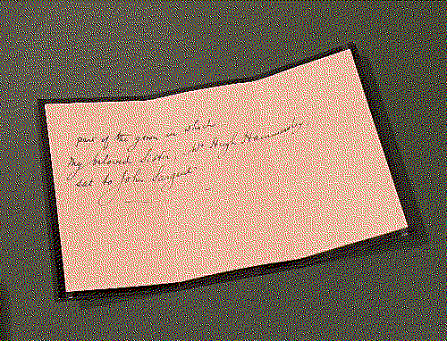
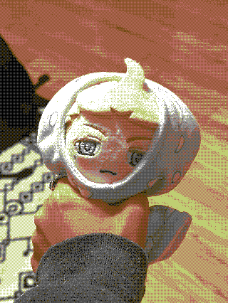
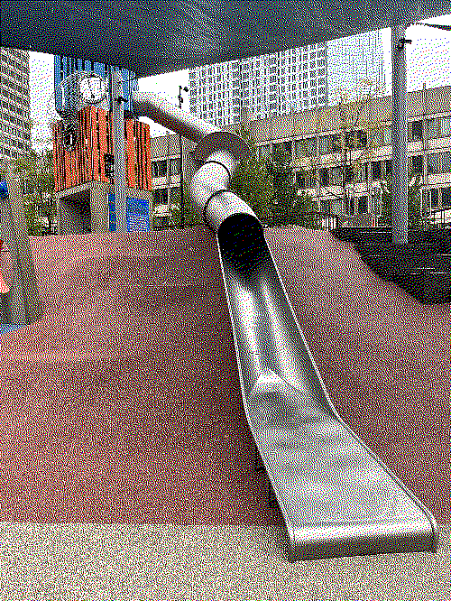
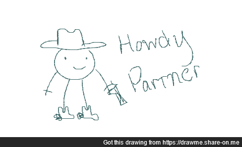
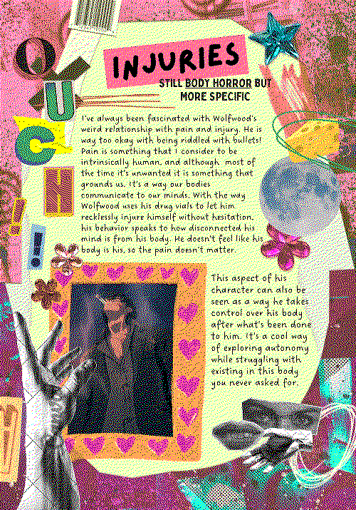
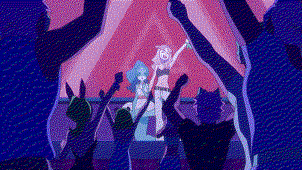
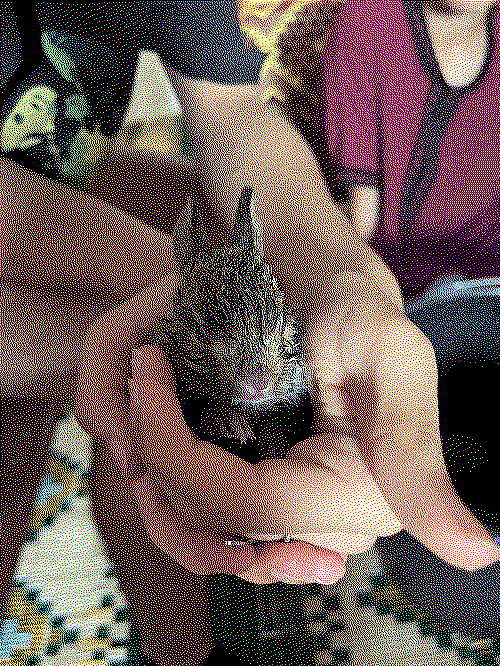
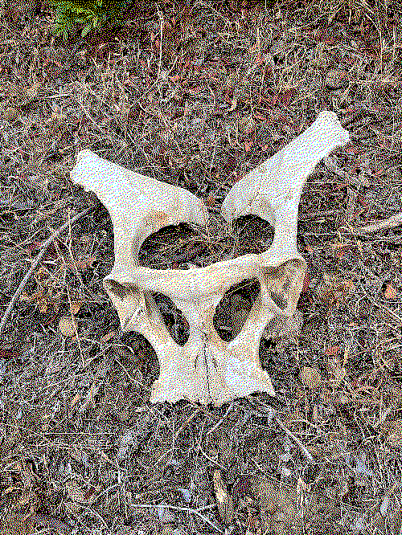
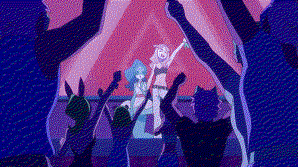
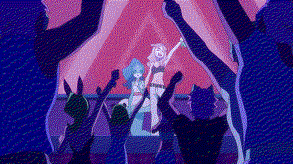

i think for now i'll be using this as a personal blog / journal where i talk about my day as a means to practice html and such. these will probably be boring (or probably not... guess you'll have to read them to find out. i don't make the rules)
it's been a full 365 days of sabrin.party!!! woah! crazy to think about how when i first made this site, i was very unsure if i'd end up sticking with it at all. so this milestone is huge! i am so proud of how far this silly little hobby has come. though i haven't actually accomplished much, i like being able to look back at my own thoughts and blogs and media log entries. i think it's so cool that sabrin.party exists. and i'm very happy with myself for creating it.
winter break is soon coming to an end, so i'm sure i'll be way more active on here once the semester starts and i'm back to my usual stressing. over break i've been mostly watching an absurd amount of god awful movies, which i've been logging in my media log thing. i cherish that part of my site. i want to figure out a way to have some sort of tagging or filtering system on there? i planned to work on that over break but never got around to it. i feel like i should be able to know how to do that.. i just took a java course so it would be nice if i could actually put those skills to use, i guess.
anyways. happy one year to sabrinparty. i wonder if i'll make it to 2...
hey would ya look at that! the clock strikes midnight! hello twenty twenty four. don't have much to say except i saw someone on twitter make their own 2023 wrapped in media so i also made one of my own... very cool. click to enjoy in a new tab for easier reading...
here's to another year of web design and internet exploration!
hello internet. i survived finals week! that was the worst finals season of my life. i pray i never go through that again... i am still recovering from being Sick with Stress. but i'm just glad i made it.
after my initial period of recovery i've sort of just been taking it easy these past few weeks. i only just started Emerging from my Enclosure and socializing with my friends again. i've missed my friends. i saw the urban nutcracker with my friend last week. it was fun! we still don't know what the plot is. our plan is to watch every version of the nutcracker out there and save the plain old regular ballet for last. last year we saw The Nutcracker Experience (a light show), this year was the urban nutcracker, next year... the slutcracker? if we can't figure out the plot of the nutcracker by the last showing, then we shall forever live with our ignorance on the matter. i will never look it up. either i get it or i don't. it was really fun dressing up in color coordinated outfits and getting complimented by strangers.
perks of being on break: mental wellness. no stress. less time on twitter. cons of being on break: nocturnal sleeping habits come back. i've been playing lots of games recently. lots of warframe and baldur's gate. i'm a sucker for story driven games. hence why this blog isn't very interesting. just wanted to check in. gonna go game now. byeeeee xo
i went to the mfa last friday because i was required to take a selfie with some statue for my art history final. i also realized i could go to the Fashioned by Sargent exhibit, which i've actually been meaning to go to for so long, but haven't because school has been keeping me so busy. so i decided to kill two birds with one stone. i honestly expected this experience to go as my usual trips to the museum. but alas, the adhd demons have struck again. although i am reluctant to give credit to the french in any way, i was charmed by this john singer sargent lad... he took full creative control over every aspect of the portraits he painted. he decided the dresses, the background and location, the poses, everything was chosen and designed by him. i haven't stopped thinking about his portraits all day and i've decided to stop yapping at all my friends about this fuck ass french painter and write about it here instead...
Mrs. Hugh Hammersley's portrait (1892) was one of my favorite portraits i saw yesterday. i was first really drawn to the color of the dress she was wearing, and did a double take take because the way he rendered the velvety silk fabric of the dress was honestly.. i don't even know how to adequately put it into words i was starstruck. it was the first time i've seen such care put into painting fabric like this. what's really fun is that sargent sent mrs hammersley a scrap from the dress she wore along with a cute note that says "part of the gown in which my beloved sister, w. hugh hammersley, sat to john sargent" as a souvenir. i thought that was really sweet and reading that made me really fond of this portrait.
the Lady Agnew of Lochnaw (1892) was another portrait i really fell in love with. the first thing i noticed was how comfortable and casual her pose was. and i found her gaze to be particularly striking... i think the first thought i had when i saw this was that tweet that went like "she looks like she's trying to attract women" which is a very silly thought to have when looking at fine art but it's true. she does. i don't know much about fine art or portraits from this era but i've never seen this energy depicted in portraits like this before. it really stood out to me. the wall text said that miss agnew had the flu when she was sitting for this portrait, and for some reason this small bit of context made me love this portrait even more. also, i wish i looked this good sick with the flu...
overall, the coolest thing about this exhibit was how they brought in the same dresses that were in a lot of the portraits to show side by side. my favorite dress they had on display was the one worn for La Carmencita's portrait (1890). the overlay of the mesh fabrics and the embroidered design reminded me a lot of moroccan kaftans. apparently, she was a very restless sitter, which is funny because her portrait is, as all of sargant's portrats, stationary. lots of classist folk were not too happy with sargent for painting her, but he seems like the kind of guy who did not give a fuck. there were a lot more dresses and portraits side by side that i really loved, but i did not take as many photos as i had wanted to. too busy experiencing the exhibit with Awe. i already want to go back...
there were also a lot of male portraits shown at the exhibit, but only two really caught my eye. the first one, Dr. Pozzi at Home (1881) was really striking.. he just looks soooo cozy here with the velvet curtains in the back i am a big fan. apparently this guys was a gynecologist so props to him for knowing how pussy works. my favorite part of the wall text was that he was often described by the men around him as exceptionally beautiful. and that sargent was really charmed by dr. pozzi as well.. which was kind of obvious based off the energy coming from this portrait..
the other guy portrait i really liked was his Portrait of Charles Deering (1917) who was one of sargent's lifelong besties. some crazy business man on vacation in florida... i was really charmed by his outfit. the off-white suit, the straw hat, his white shows while surrounded by palm trees is just such a lovely image. i appreciate the calm soothing energies radiating off this portrait. and i know this is the jjk brainrot speaking but this also made me think of nanami kento... this is what he should have been doing.... what he deserved.. missing him..
the exibit is still open until the 15th of january.. i really want to go again. maybe next month i'll even buy the art book if i am still as obsessed with these portraits as i am right now. now i have to go study for my compsci exam. finals season has been really beating my ass this semester. i considered #blogging about it but i don't wanna bring my emo-ness onto here.. its such a lovely place, my website... keep it nice and good vibes and stuff. hope you enjoyed my ramblings on my favorite sargent paintings i will probably do this again..

alright this is going to sound very silly but i just need to write this down. i think i am being cursed by millions knives the fictional character from trigun. that would be a great reddit post title if i had a reddit account tbh. to start off i need to give u a rundown of my trigun merch and other fan stuff purchases so you can Understand the full story.
last summer i bought a knives plushie and Only a knives plushie because i was too broke to buy all three (vash and wolfwood) at the same time. but apparently not too broke to also buy a knives, wolfwood, and vash keychain, and also a knives bottle cap pin (all these except the plushie are from cranity shop btw check them out they're one of my favorite artists Very cool). anyways the point is that's a lot of stuff but i got one of Each character because i wanted all of them. to be together. and live together as a fucked up family on my keychain thingy, right? so here's where it gets funny.
i get the plushie in september. amazing. couple weeks later i get 1 of 2 packages with the keychains, i got my knives keychain! great amazing so exciting. i put him on my jeans. so now i have a count of 2: knives merch. couple weeks later i get part 2 of 2 of my package so naturally im expecting the vash wolfwood and knives pin. however! there was a silly mixup with the packages and i open the envelope to see.. a knives keychain. identical to the one i have! so i'm like omg that is so funny. i have.. 2 knives know. 3 total technically. and no vashwood no pin. so i email the lovely shop owner and they're like oopsies! sorry for the mixup ill send ur stuff next week and they did! great amazing. the package comes and IT'S JUST THE KNIVES PIN. SO NOW I HAVE SO MUCH KNIVES MERCH AND NO OTHER TRIGUN CHARACTER MERCH. and i just want to be clear i'm not complaining at all i literally love this artist and am so grateful they have their stuff up for sale i just think this string of mixups and miscommunications is absolutely hilarious
so my theory is... knives may have manifested himself into reality and is using his cursed evil territorial vibes to sabotage my trigun purchase orders and manipulate them somehow so that the only thing that enters my house is knives. it's the only valid explanation for this silly series of events. what else could it possibly be? why is it that the knives always make it to my home safe and sound but vash and wolfwood are not allowed. it is clear to me that knives has marked my home as his territory and that obviously i'm not allowed to love anyone else except for him. so that's where i'm at now. another piece of supporting evidence for this i forgot to add is that when i got my first knives keychain i wore him once and then the next day i forgot to bring him out with me and that was the Worst day i had in months. it wasn't that deep but just a series of miserable unimportant events: coffee order somehow didn't go through and i had to wait 30 minutes to make me another one. was late to class. i had a quiz i forgot about and didn't prepare for. my stomach growled so loud in class the girl next to me Turned Around and Looked At Me like i did something wrong. the train broke down on my way home. i just felt like knives was punishing me for leaving me home. so now he's on my keychain permanently and i never take him off. he has grown attached to me now and there's nothing i can do about it. i just wish he'd let me let other trigun guys into my home to keep him company... or something..
anyways this is ridiculous i just wanted to share... i hope you can find some enjoyment from this...
monumental moment for the noodle dick group chat (est. maybe 2012? or 2013 i can't remember exactly)!! my cool friend amelia came downtown to visit and have lunch!!! i am overusing these exclamation points because i cannot emphasize enough how happy i am that i got to meet them for the first time in person!! it's always great when the online friend becomes an IRL. it's like a level up. despite the pouring rain we took our soaked selves to wagamamas because i love their ramen (and so does jinsoul, as you can see...) and we hung out around the city until it was time to bid our farewells and part ways. i also got to see the cop slide for the first time!! i had first heard about the latest tourist attraction in boston this past summer, but i forgot to visit it until now. it was so fun. a very wonderful day. i just wanted to document it here for the #memories. i hope they come back to visit again i honestly had such a good time. thank you amelia for the garage sale pins i am this upcoming video game's #1 fan...
i've had the most wretched couple of weeks but yesterday i went down to the uniqlo downtown and decided it was time to treat myself. so i bought one new outfit and two of the jujutsu kaisen t-shirts. i am in so much credit card debt and totally could not afford the $100 i just dropped on clothes but i literally don't care i deserved that. i can worry about the finances of it all later. i am very excited to wear my new clothes and i feel so much better about everything. retail therapy works! school has been feeling better, general complaints aside. anyways. happy wolfwood wednesday. make sure you think about him.
i just wanted to say after writing that previous blog post i went home at like... 3pm. then i cried and had breakfast at around 4pm. then i just.. (i have no memory of anything after breakfast) went upstairs and slept? for ten hours? without meaning to... that's never happened before. i feel fine now i guess but wow lol. i was tired.
anyways i wanted to showcase my most recent doodle submission. howdy partner. thank u anon. u can send a doodle here if you want.

good god. it is october. too many events have happened all at once and i am very overwhelmed grr. i am blogging in the middle of this silly ass tourism class to try to uh de-stress and maybe feel normal about things. reading the secret history made me realize how much i love learning things at school. being in my soc classes depresses me. being in my compsci classes is Definitely a challenge but i don't think i can actually get good at it, which also depresses me. maybe i should have just majored in literature after all... i just can't seem to stick to One thing! a very silly (and expensive...) flaw of mine.
i also feel weird about not having updated this site in a while. it's my precious baby. i've just been so tired lately. i haven't been doing as well in school as i'd like because i keep getting interrupted by Life Events. so i get all frazzled and it takes me like, an entire week to recover. so the semester has been off to a rough start.
on the bright side i started playing baldur's gate 3, which is a very different kind of game than what i typically play, but i actually really like it. i'm still not used to the mechanics and gameplay yet, but i'm really invested in the lore and the storyline. plus i had a lot of fun making my main character oc. i think i made him too pretty though... i had originally went in with the plan of making a very big creature looking man with an underbite and stuff, but i got distracted and ended up with something completely different. i love how realistic the game is, i can see their pores! crazy. the pale elf is fun, and he seems to be a #FanFavorite, i see that guy all over twitter. i hope the alien lady from the very beginning comes back, she was cool and i miss her.
okay class is over now i am ending this blog. farewell.
it's funny, i've noticed a strong correlation between my creativity levels and my stress levels. as soon as i start stressing out about something (ahem, school) i start thinking genius thoughts and creating so much Art (in the most untraditional sense). i'm not really looking forward to school, despite Loving school a lot. i'm just really nervous to start again. so for the past few days i've been thinking a lot about how the trans experience is represented in movies and tv shows.
i made my first ever zine (on canva... i didn't have the materials i wanted to make it by hand which was what i had originally wanted to do)! it's basically a character study on wolfwood and i used him to think about the connection between the body horror genre and transness. you can read it here, but i think i want to find a home for it on my website too. later. the page i'm most proud of is the one on injuries. i feel like i articulated those thoughts the best. you can click on that image to view in full quality.
since then i've been on a roll of consuming media with very similar themes. i watched The Fly (1986) which was a very fun way of exploring gender through body horror. and now i'm re-watching BNA with my friend lola. i had first watched this anime in 2020, so i remember literally nothing. it's perfect because it feels like i'm watching it for the first time all over again. during this watch i was really struck by the transgender themes, especially in episode 4 that centers nina and our main girl michiru. the entire episode basically tells the story of two closeted trans kids sneaking out to a party where they seek acceptance, get to explore their gender the way they want to for the first time, are met with hostility, and come back home with no regrets.
nina is introduced as this dolphin girl who's totally obsessed with being a human and "passing" as one. she's an internet celebrity and tells everyone online that she's a human. online, she can actually control the way people perceive her and gets to exist in the identity she chooses! the one she feels she belongs to! michiru also has a lot of Body Struggles existing as a beastman when all she wants is to go back to being a human too. she's unhappy with her body and doesn't feel like it belongs to her. so once she realizes she can look human again on command, she and nina sneak out (without permission) to go to a party where nina is told she will be accepted. there, nina fully embraces what it's like to exist as a human. even tho michiru is still so hesitant and terrified and anxious and not ready to Come Out. and this party is so fascinating because everyone there puts up  this facade of #allyship and nina gets so caught up in the excitement she accidentally turns back into a dolphin in front of everyone. the partygoers then start to parade her around like she's a shiny new toy creature and from that point onwards they only see her as a dolphin. it's like even when cis people get your pronouns and name right, you can tell when they don't really see you as your true identity. they still subscribe to the gender structures you're trying so hard to break out of. the partygoers just put nina back in this box (fish tank) she never wanted to be in, and it really sucks. nina gets hurt, michiru takes her home, and talks about regretting going to the party. to this, nina melts my heart and tells her that even though their night out didn't go as planned, and even though she was hurt and it was hard, she still loved her time there. she still loved being a human because that's who she really is! it was such a beautiful moment and so explicitly queer.
do you see how all of these thoughts come to me at 4 in the morning when i'm supposed to be sleeping, fixing my sleep schedule, and preparing for classes. do you see how these thoughts plague my mind during the most inconvenient of times. do you see how i struggle with these huge massive juicy brilliant brain babies that come to me during the wee hours of the night when i have other babies to tend to.
i've officially settled from my summer trip to morocco! that was fun. i am glad to be back. i missed seeing my friends. and watching tv! and good iced coffee. emphasis on the last one.
despite being ultra mega broke right now, i got very bored yesterday and went on a walk to the coffee shop and bookstore, and stopped by goodwill to check out their music collection. it hit me that i have a whole ass CD player, and thrift stores would surely have a neat collection of music for me to check out. so i went! i found meat loaf's welcome to the neighborhood. i've only listened to a few of their songs here and there and really liked them, so i picked it up to listen when i got home. i really like it! very meat loaf. and the album cover is wicked cool. i currently have it playing on repeat until i get sick of it completely.
i'm not mentally prepared to go back to school, but i still have a couple weeks before we start. i am most looking forward to having a job again. i went a little crazy with the summer spending this year... lots to pay back. but everything will be fine if i don't stress about it too much. peace and love, or whatever that trigun guy says..
after three years of begging my mom to take me up to the mountains of morocco where she's from, my dream finally came true! we spent two days there and it was by far the highlight of my summer. we arrived at around 9am and had breakfast, and i met a lot of my mom's cousins and their kids and they are all such wonderful people. they were really surprised i could speak arabic and that i was so happy to be there. i just love the countryside. it's rare i get to experience it. after breakfast we all went out and explored their land to see what they grew over there. most of it was olive trees but i was nibbling from all of the fruit trees i could reach. they had carob trees, i ate figs, blackberries, pomegranates, oranges, lemons, watermelons, squash, and others i am probably forgetting. after that we went back home and had lunch and one of my cousins found some bunnies and showed them to us! they were so cute. i loved hearing about all the plants they grow there and the animals they take care of. i wish i had that kind of knowledge on the life that surrounds us. i'm tired of being a city slicker. we spent the night hanging out with my mom's family and talking to them about all sorts of things. i got a huge ego boost because of how impressed they were of me, which is pretty funny. the bar is so low when it comes to moroccans who grew up outside of morocco that they were really surprised that i was actually able to hold a conversation! the next day i woke up at 5am (the roosters and dogs barking were really loud, but it didn't really bother me much. it was like a Natural Alarm Clock) and we all went on a long hike all the way to the top of the mountain they live on. i had so much fun i've never been happier. we ate all sorts of berries on the way (mostly blackberries which i don't even like much, but they were so yummy!). i came across this skull. i forget what creature left it here. most likely either a horse or a cow, i remember asking but i forgot the answer. it shall remain a mystery. i think the hike took a total of 2 hours up and down. it was wonderful. my mom's aunt gave me a headscarf and a 'mendil' so i looked very rural. after the hike we finally had breakfast at around 11am i think. and i took a fat nap. i woke up just in time for lunch and we had cous-cous! which also makes me really sleepy so i took another short nap. after that i went down to the well and filled up jugs of water for the family, and the water was so delicious. if you think water can't be yummy you're wrong. after that we had dinner and spent the rest of the night telling each other riddles (which i could not figure out for the life of me...) and chatting. it was really nice and i loved the time i spent there. i plan on visiting the mountains every time i come to morocco from now on. i love it so much! that's all for my summer updates...
on an unrelated note, i really wanted to see Barbenheimer at the movies but i doubt they'll still be in theaters by the time i come back home. i could technically watch them while i'm here but i did not pack my barbie outfit... and who would i be if i didn't go see barbie in my pretty pink outfit. not myself, that's for sure. even if i don't see them in theaters, i have plans to watch them both at home with my dearest miraç (≧◡≦) ♡ so i'll be looking forward to that.
figured i'd blog a little bit about morocco while i finally have some downtime. i've been so busy the past week it's been hard to find some time to recharge... after celebrating eid with my family (which was lots of fun) my cousins and i went to tangier for the weekend! we first went to this beautiful place (i don't remember what it's called.. and i forgot to ask) but the views were incredible. we then took a short walk up the Rmilat, where my cousins spotted some famous Instagram vlogger. it makes sense, it's such a nice spot. i've been to the Rmilat once before on our last trip for my sister's birthday. later that night we went to this Club (except it wasn't a club in the traditional sense of the word...) i thought it would be a Club Club, but it was actually just a nice sit-down restaurant. with some dancing towards the end. I was way too shy to dance (felt very out of my element) but it was so much fun! the food was delicious I had 4 of those mini quesadillas and a virgin mojito. mojitos seem to be all the rage this summer in Morocco (they even have them in McDonalds?) they're not even that good...
after the tangier trip we stopped by Asilah on the way back home to my grandmother's house. oh to live in one of those gorgeous neighborhoods. walking down the streets of Asilah will never get old, it's so beautiful. there's so much art around and i wanted to buy All Of It So Bad...... but I did not have any money... so sad. I'm grateful I got to enjoy it all in the first place. except, at this point in the trip i was so exhausted i could barely stand on my two feet anymore... I hope to visit again soon when I'm not so tired and achey, since it's not too far from where I'm staying.
after the tangier/asilah trip, i entered my beach bum era! i told my cousins i wanted to have a beach bum summer and it's been going well so far. i wish i could embrace the beach bum life back home but there's just no good beaches near massachusetts. that don't cost a bajillion dollars to get to. moroccan beaches are superior anyways. i went to kahf lhmam two days in a row and it was great. i got a little burnt for the first time! it doesn't hurt but i'm red all over. i guess they weren't kidding when they said the UV would be at 11 those days... it was intense! i loved swimming at the beach i'm itching to go again. there's nothing better than that special kind of Beach Hunger and the Post-Beach Sleep..... after day 1 of Beach i slept for 13 hours... i was so tired. on day 2 i went into the mountains on that beach and scooped up some algae clay and put it all over my face and chest and arms as a clay mask. it made my skin so soft.. hope you enjoyed reading my Highlights i hope they were coherent. i'm re-watching trigun stampede as i write this so.. hehe
i am currently on vacation seeing my family in morocco so i'll keep this short, but i couldn't go the whole day without making a special birthday blog post for my favorite dog in the whole wide world... remus! she's such a precious gal. i hope she enjoys her day 2 the fullest and gets a bunch of dog treats and stuff... whatever pups usually enjoy.
my beloved friend adia came into town to visit me today and i had the best day ever!! it was very rainy and we got soaked but i'm still so glad they came despite the poor weather. we had brunch at the friendly toast downtown and i had yummy scrambled eggs and adia had a fancy looking eggs benedict. she explained what an egg benedict was but i still don't understand it. it looked yummy though. we also did some indoor activities (shopping) at newbury comics and bought miles morales merch and i bought the new ateez album. the serotonin boost was going off the charts for both of us.. we unboxed all of our purchases immediately outside of the store. there was no time to wait. naturally.
after that we hung around the harbor and made up stories about how bostonian children get christened in the water where they did the boston tea party back in 1772. and i took that photo of my friend because their jacket matched the boat in the back and it was cute.
as i am typing this i just realized we never made it to the juneteenth celebration we were supposed to go to... i actually just facepalmed so hard. going to text this to them later. wow. that's the only downside to this trip i can't believe we forgot. well... we'll gettem next time! other than that, i am actually so happy i got to see them today and i had so much fun and i miss them already. i love adia! i can't wait for the next time we hang out (in person) ☆⌒ヽ(*'､^*)chu
god i love art. i love buying art. i'm broke as shit but i love deluding myself into thinking i'm a rich old lady patron of the arts. i went to the brighton bazaar today and had such a fun time looking at all the artists selling their work. i got a retromania poster, which i hope to go to next year. they have updates on when they host events like these on Instagram which i don't have anymore so.... i rely on my lovely friends to keep me updated on things like these now. i keep thinking everyone else stopped using Instagram when i did, so I'm always surprised when people ask me to follow theirs.... i really do Not want to go back to instagram but i might make a throwaway account just so i can get notifications for local events and stuff? if i don't figure out another way to be In The Know about these things... there has to be other ways...
i bought this beautiful little buglady print that i jumped on as soon as i saw it because it reminded me of my favorite jujutsu kaisen lady, yorozu ♡ from @mourningdoves (on instagram). i also got a cicada pin from the roving house and the beautiful 'sixties radnitzky' button from Marianne Radnitsky and a snake ring from a woman who's name i forgot to grab before i left and feel so bad about.... kicking myself for the rest of eternity over this.... im sorry snake ring lady i was too distracted talking to you that i forget to grab a business card to remember you by...
i had a great time today and i will Totally be coming to every one of these events now that I know they have them pretty often... the next one is in June i believe and i really want to get a couple t-shirts.
on another note i've been wanting to do yet another complete redesign of my website... i want a lighter theme that feels more 2007 web design with like fake ads and stuff... but keep the omori references on every page. i have some ideas i hope to get around to this summer. i'm off to binge the rest of succession now..... farewell
this will be a short blog post. i mostly just wanted to share this cool inosuke graffiti art i walked by on my way to work today. i wasn't too into KNY as a series but i recognized him and thought this was super cool. i love this alley they usually have new art painted on the walls every few weeks. it's nice to see what's new when i come into work.
this is the longest i've gone without updating my site in a while, i'm pretty sure. at least, it sure feels like it. I am so completely utterly burnt out. Checked out. mentally Done with the semesters but i have a very difficult final coming up in 2 days and. have given up on studying for it. i've never had a burnout this bad before like..... wow i am just so done with school. i'll officially be Free! on friday night. then i'll be able to sleep for 3 days straight and then come back and start working on this site a little more. thinking of a complete redesign again. perhaps i should preserve all my old layouts somehow. finals week or my final week?! stay tuned...
i had originally meant to write this on my actual birthday, which was yesterday. happy birthday me!! i am The April Fool. since it's ramadan, i didn't really get to do any of the usual birthday celebrations (fasting makes me soo sleepy anyhow) so i'm just going to do a small birthday celebration with friends after eid ♡ yesterday i got my nails done at the salon because i hadn't been in a while.. i got red this time! i spent the rest of the day wandering around the grocery store Hungrily and then came home to watch tv and play omori with my friend ab ('▽^人) we finally finished the sunny route! i cried during the final battle & the final duet cutscene... it really is such a beautiful game.
well.. i messed up my sleep and meds schedule last night due to Important Gaming things which actually renders me completely useless for the day. sometimes i wish i had the Hyperactive part of adhd in me so at the very least i can get up and do stuff... however the ADD and the Fatigue demons r winning the battle of today. my brain feels foggy and extremely sleepy but i also am not Sleepy.. if that makes sense at all. this is unfortunate because i have two big assignments due in 2 days which is stressing my out a little bit... computer science is hard. (⇀‸↼‶) so i will spend today doing Absolutely nothing but rot in my bed and tomorrow i'll just have to grind extra hard...
personally i think it should be a crime that spring break only lasts a week. it all went by so fast! this week my friends from out of state and i got to spend a few days together over spring break and i had so much fun! we went to the aquarium and i made lots of sea creature friends, it was really nice. we also saw two museums and went to this super cute crafts place where we made hair clips and phone cases, and i really want to go back soon to make a rug because that looked really fun. i also had some of the tastiest ramen and the tastiest nigerian food i've ever had in my life. man i love good food. here is a slideshow of some photos i took during our trip!
besides these adventures i'm also super close to finishing my third full play-through of OMORI with my friend (we just entered blackspace, aaah!) and i am super excited to see how they will play out the ending. i love that game so much and it's so much fun sharing the OMORI experience with a friend too. i'm glad i got to make the most of my spring break, i totally wasn't expecting all this excitement! i am very much dreading the start of school again on monday... i have so much to work on. sunday will be crunch time... well. off i go!
jennette mccurdy?! at MY school?! it's more likely than you'd think. last Friday the one and only jennette mcCurdy came to my campus to talk about her book and i had no idea this event was happening until literally 2 hours before. i battled many demons and the will of gods in order to make it in time to see her and i'm so glad i did. i bought her book & audio cd as i was sitting there looking at her and watching her talk. it was surreal. jennette was sooo inspiring to me it was incredible to hear her talk ab her one woman show and her book and also her future plans! she's so funny and also.. maybe a little tooo relatable at times. i can't wait for my book to come to i can read it and maybe blog about it later. just wanted to document this highlight of not only my year, but my LIFE! i'll be thinking about this day forever... and if you're reading this. go buy I'm Glad My Mom Died by jennette mccurdy from your local bookstore i know you have one..
hello! i'm having a lot of fun learning how to animate images. although it's really really hard. anywho. its the last day of ~freedom~ before my semester starts tomorrow, and i am really nervous about my upcoming calculus and computer science classes.
i am not really a math person, and i added this computer science degree to my course load because i wanted a challenge (and i don't want to be poor!) ..・ヾ(。＞＜)シ but i know i can do well! i know once i start classes tomorrow i will feel better.
this post is doubling as a movie review for puss in boots: the last wish. i saw this yesterday with my friend and we LOVED it. this was so surprisingly good i am comfortable calling it the most best Movie ever.
i've never seen the previous movies so i didn't really know what to expect. the first / intro song "fearless hero" is such a bop it's been stuck in head since i watched it. i loved everything about that movie it's hard to figure out where to start. i loved the villain of the movie, the Reaper wolf guy. and i love how he wasn't really a bad guy, just absolutely terrifying (nearly pissed myself whenever he showed up) (fun fact: my friend told me during the movie that in some cultures, people bury loved ones with coins atop their eyes and that sort of symbolizes death, hence the coins in wolfie's eyes. i just thought that was really cool). i've never seen a movie like this explore the fear of death, how to deal with these fears and still make sure to keep it light. making movies suitable for both children and adults is an incredible skill! (ᗒᗣᗕ)՞
i am officially a puss in boots Fan after watching this movie. kitty and puss are so much fun. i really enjoyed their dynamics and their adorable ending together. i'm not much of a romantic but who wouldn't awe at "one life spent with you is all that i could wish for" like come on now. (≧◡≦) ♡
i guess my one critique of the movie was that it would have been better if there were more songs. but that doesn't really carry much weight overall. i think with that intro song i was expecting more songs like a disney money. and it would have been so good. but despite all that i'd give this movie a 10/10. the animation was incredible, i love how choppy it looked (choppy isn't the right word, but whatever they did gave it a comic-book esque feel and i really loved it)
after seeing that masterpiece of a film, me and my friend went to a vegan thai food place nearby. i had fried dumplings, wontons (yum), and some tom yum gai soup. every time i try something new here to see what i like. i did not enjoy the soup as much but i think that's just because i don't like water based soup in general. i luv creamy soups. next time i'm in town i think i will try one of their noodle soups. they come in huge bowls, so i will definitely be taking home leftovers. (^人^)
that's all i have for today. hope you enjoyed my rambles.
i think i'm starting to get a hang of this website building thing? thank you to the internet for being my teacher... it is so late, my head hurts a little and i'm still not tired. i am to blame. once i figure out this whole coding thing and learn how to make stuff fully on my own i will probably have more puter-related things to say. but for my first post? entry... i will practice my list making skills.
that was a lie i won't be doing that yet. first i want to tell you about my day. i went to a bookstore!!!!! with my friend and even though i said i would only buy myself two books i could not control my impulses so i bought four. here is a list of the books i bought today:
folklorn by Angela Hur
thistlefoot by GennaRose Nethercott
cassandra at the wedding by Dorothy Baker
decline and fall by Evelyn Waugh (which uh... i am nervous about ngl)
so that's exciting! here's a picture i took when i got home from my trip. and also a picture of the egg sandwich i had too. it was so delicious. scrambled eggs. avocado. pesto. cheese. tomato. on english muffin. mmmmmm... getting hungry again just thinking about it.
this is looking like a real blog already wow look at that.

 for last. last year we saw The Nutcracker Experience (a light show), this year was the urban nutcracker, next year... the slutcracker? if we can't figure out the plot of the nutcracker by the last showing, then we shall forever live with our ignorance on the matter. i will never look it up. either i get it or i don't. it was really fun dressing up in color coordinated outfits and getting complimented by strangers.
for last. last year we saw The Nutcracker Experience (a light show), this year was the urban nutcracker, next year... the slutcracker? if we can't figure out the plot of the nutcracker by the last showing, then we shall forever live with our ignorance on the matter. i will never look it up. either i get it or i don't. it was really fun dressing up in color coordinated outfits and getting complimented by strangers.


 nina is introduced as this dolphin girl who's totally obsessed with being a human and "passing" as one. she's an internet celebrity and tells everyone online that she's a human. online, she can actually control the way people perceive her and gets to exist in the identity she chooses! the one she feels she belongs to! michiru also has a lot of Body Struggles existing as a beastman when all she wants is to go back to being a human too. she's unhappy with her body and doesn't feel like it belongs to her. so once she realizes she can look human again on command, she and nina sneak out (without permission) to go to a party where nina is told she will be accepted. there, nina fully embraces what it's like to exist as a human. even tho michiru is still so hesitant and terrified and anxious and not ready to Come Out. and this party is so fascinating because everyone there puts up  this facade of #allyship and nina gets so caught up in the excitement she accidentally turns back into a dolphin in front of everyone. the partygoers then start to parade her around like she's a shiny new toy creature and from that point onwards they only see her as a dolphin. it's like even when cis people get your pronouns and name right, you can tell when they don't really see you as your true identity. they still subscribe to the gender structures you're trying so hard to break out of. the partygoers just put nina back in this
nina is introduced as this dolphin girl who's totally obsessed with being a human and "passing" as one. she's an internet celebrity and tells everyone online that she's a human. online, she can actually control the way people perceive her and gets to exist in the identity she chooses! the one she feels she belongs to! michiru also has a lot of Body Struggles existing as a beastman when all she wants is to go back to being a human too. she's unhappy with her body and doesn't feel like it belongs to her. so once she realizes she can look human again on command, she and nina sneak out (without permission) to go to a party where nina is told she will be accepted. there, nina fully embraces what it's like to exist as a human. even tho michiru is still so hesitant and terrified and anxious and not ready to Come Out. and this party is so fascinating because everyone there puts up  this facade of #allyship and nina gets so caught up in the excitement she accidentally turns back into a dolphin in front of everyone. the partygoers then start to parade her around like she's a shiny new toy creature and from that point onwards they only see her as a dolphin. it's like even when cis people get your pronouns and name right, you can tell when they don't really see you as your true identity. they still subscribe to the gender structures you're trying so hard to break out of. the partygoers just put nina back in this 
 which also makes me really sleepy so i took another short nap. after that i went down to the well and filled up jugs of water for the family, and the water was so delicious. if you think water can't be yummy you're wrong. after that we had dinner and spent the rest of the night telling each other riddles (which i could not figure out for the life of me...) and chatting. it was really nice and i loved the time i spent there. i plan on visiting the mountains every time i come to morocco from now on. i love it so much! that's all for my summer updates...
which also makes me really sleepy so i took another short nap. after that i went down to the well and filled up jugs of water for the family, and the water was so delicious. if you think water can't be yummy you're wrong. after that we had dinner and spent the rest of the night telling each other riddles (which i could not figure out for the life of me...) and chatting. it was really nice and i loved the time i spent there. i plan on visiting the mountains every time i come to morocco from now on. i love it so much! that's all for my summer updates...  figured i'd blog a little bit about morocco while i finally have some downtime. i've been so busy the past week it's been hard to find some time to recharge... after celebrating eid with my family (which was lots of fun) my cousins and i went to tangier for the weekend! we first went to this beautiful place (i don't remember what it's called.. and i forgot to ask) but the views were incredible. we then took a short walk up the Rmilat, where my cousins spotted some famous Instagram vlogger. it makes sense, it's such a nice spot. i've been to the Rmilat once before on our last trip for my sister's birthday. later that night we went to this Club (except it wasn't a club in the traditional sense of the word...)
figured i'd blog a little bit about morocco while i finally have some downtime. i've been so busy the past week it's been hard to find some time to recharge... after celebrating eid with my family (which was lots of fun) my cousins and i went to tangier for the weekend! we first went to this beautiful place (i don't remember what it's called.. and i forgot to ask) but the views were incredible. we then took a short walk up the Rmilat, where my cousins spotted some famous Instagram vlogger. it makes sense, it's such a nice spot. i've been to the Rmilat once before on our last trip for my sister's birthday. later that night we went to this Club (except it wasn't a club in the traditional sense of the word...) i thought it would be a Club Club, but it was actually just a nice sit-down restaurant. with some dancing towards the end. I was way too shy to dance (felt very out of my element) but it was so much fun! the food was delicious I had 4 of those mini quesadillas and a virgin mojito. mojitos seem to be all the rage this summer in Morocco (they even have them in McDonalds?) they're not even that good...
i thought it would be a Club Club, but it was actually just a nice sit-down restaurant. with some dancing towards the end. I was way too shy to dance (felt very out of my element) but it was so much fun! the food was delicious I had 4 of those mini quesadillas and a virgin mojito. mojitos seem to be all the rage this summer in Morocco (they even have them in McDonalds?) they're not even that good... after the tangier trip we stopped by Asilah on the way back home to my grandmother's house. oh to live in one of those gorgeous neighborhoods. walking down the streets of Asilah will never get old, it's so beautiful. there's so much art around and i wanted to buy All Of It So Bad...... but I did not have any money... so sad. I'm grateful I got to enjoy it all in the first place. except, at this point in the trip i was so exhausted i could barely stand on my two feet anymore... I hope to visit again soon when I'm not so tired and achey, since it's not too far from where I'm staying.
after the tangier trip we stopped by Asilah on the way back home to my grandmother's house. oh to live in one of those gorgeous neighborhoods. walking down the streets of Asilah will never get old, it's so beautiful. there's so much art around and i wanted to buy All Of It So Bad...... but I did not have any money... so sad. I'm grateful I got to enjoy it all in the first place. except, at this point in the trip i was so exhausted i could barely stand on my two feet anymore... I hope to visit again soon when I'm not so tired and achey, since it's not too far from where I'm staying. cost a bajillion dollars to get to. moroccan beaches are superior anyways. i went to kahf lhmam two days in a row and it was great. i got a little burnt for the first time! it doesn't hurt but i'm red all over. i guess they weren't kidding when they said the UV would be at 11 those days... it was intense! i loved swimming at the beach i'm itching to go again. there's nothing better than that special kind of Beach Hunger and the Post-Beach Sleep..... after day 1 of Beach i slept for 13 hours... i was so tired. on day 2 i went into the mountains on that beach and scooped up some algae clay and put it all over my face and chest and arms as a clay mask. it made my skin so soft.. hope you enjoyed reading my Highlights i hope they were coherent. i'm re-watching trigun stampede as i write this so.. hehe
cost a bajillion dollars to get to. moroccan beaches are superior anyways. i went to kahf lhmam two days in a row and it was great. i got a little burnt for the first time! it doesn't hurt but i'm red all over. i guess they weren't kidding when they said the UV would be at 11 those days... it was intense! i loved swimming at the beach i'm itching to go again. there's nothing better than that special kind of Beach Hunger and the Post-Beach Sleep..... after day 1 of Beach i slept for 13 hours... i was so tired. on day 2 i went into the mountains on that beach and scooped up some algae clay and put it all over my face and chest and arms as a clay mask. it made my skin so soft.. hope you enjoyed reading my Highlights i hope they were coherent. i'm re-watching trigun stampede as i write this so.. hehe i am currently on vacation seeing my family in morocco so i'll keep this short, but i couldn't go the whole day without making a special birthday blog post for my favorite dog in the whole wide world... remus! she's such a precious gal. i hope she enjoys her day 2 the fullest and gets a bunch of dog treats and stuff... whatever pups usually enjoy.
i am currently on vacation seeing my family in morocco so i'll keep this short, but i couldn't go the whole day without making a special birthday blog post for my favorite dog in the whole wide world... remus! she's such a precious gal. i hope she enjoys her day 2 the fullest and gets a bunch of dog treats and stuff... whatever pups usually enjoy.
 my beloved friend
my beloved friend  i got a retromania poster, which i hope to go to next year. they have updates on when they host events like these on Instagram which i don't have anymore so.... i rely on my lovely friends to keep me updated on things like these now. i keep thinking everyone else stopped using Instagram when i did, so I'm always surprised when people ask me to follow theirs.... i really do Not want to go back to instagram but i might make a throwaway account just so i can get notifications for local events and stuff? if i don't figure out another way to be In The Know about these things... there has to be other ways...
i got a retromania poster, which i hope to go to next year. they have updates on when they host events like these on Instagram which i don't have anymore so.... i rely on my lovely friends to keep me updated on things like these now. i keep thinking everyone else stopped using Instagram when i did, so I'm always surprised when people ask me to follow theirs.... i really do Not want to go back to instagram but i might make a throwaway account just so i can get notifications for local events and stuff? if i don't figure out another way to be In The Know about these things... there has to be other ways... 
 was too distracted talking to you that i forget to grab a business card to remember you by...
was too distracted talking to you that i forget to grab a business card to remember you by...
 sleepy anyhow) so i'm just going to do a small birthday celebration with friends after eid ♡ yesterday i got my nails done at the salon because i hadn't been in a while.. i got
sleepy anyhow) so i'm just going to do a small birthday celebration with friends after eid ♡ yesterday i got my nails done at the salon because i hadn't been in a while.. i got  sense at all. this is unfortunate because i have two big assignments due in 2 days which is stressing my out a little bit... computer science is hard. (⇀‸↼‶) so i will spend today doing Absolutely nothing but rot in my bed and tomorrow i'll just have to grind extra hard...
sense at all. this is unfortunate because i have two big assignments due in 2 days which is stressing my out a little bit... computer science is hard. (⇀‸↼‶) so i will spend today doing Absolutely nothing but rot in my bed and tomorrow i'll just have to grind extra hard...


 many demons and the will of gods in order to make it in time to see her and i'm so glad i did. i bought her book & audio cd as i was sitting there looking at her and watching her talk. it was surreal. jennette was sooo inspiring to me it was incredible to hear her talk ab her one woman show and her book and also her future plans! she's so funny and also.. maybe a little tooo relatable at times. i can't wait for my book to come to i can read it and maybe blog about it later. just wanted to document this highlight of not only my year, but my LIFE! i'll be thinking about this day forever... and if you're reading this. go buy I'm Glad My Mom Died by jennette mccurdy from your local bookstore i know you have one..
many demons and the will of gods in order to make it in time to see her and i'm so glad i did. i bought her book & audio cd as i was sitting there looking at her and watching her talk. it was surreal. jennette was sooo inspiring to me it was incredible to hear her talk ab her one woman show and her book and also her future plans! she's so funny and also.. maybe a little tooo relatable at times. i can't wait for my book to come to i can read it and maybe blog about it later. just wanted to document this highlight of not only my year, but my LIFE! i'll be thinking about this day forever... and if you're reading this. go buy I'm Glad My Mom Died by jennette mccurdy from your local bookstore i know you have one.. kitty and puss are so much fun. i really enjoyed their dynamics and their adorable ending together. i'm not much of a romantic but who wouldn't awe at "one life spent with you is all that i could wish for" like come on now. (≧◡≦) ♡
kitty and puss are so much fun. i really enjoyed their dynamics and their adorable ending together. i'm not much of a romantic but who wouldn't awe at "one life spent with you is all that i could wish for" like come on now. (≧◡≦) ♡
 disney money. and it would have been so good. but despite all that i'd give this movie a 10/10. the animation was incredible, i love how choppy it looked (choppy isn't the right word, but whatever they did gave it a comic-book esque feel and i really loved it)
disney money. and it would have been so good. but despite all that i'd give this movie a 10/10. the animation was incredible, i love how choppy it looked (choppy isn't the right word, but whatever they did gave it a comic-book esque feel and i really loved it)

 wontons (yum), and some tom yum gai soup. every time i try something new here to see what i like. i did not enjoy the soup as much but i think that's just because i don't like water based soup in general. i luv creamy soups. next time i'm in town i think i will try one of their noodle soups. they come in huge bowls, so i will definitely be taking home leftovers. (^人^)
wontons (yum), and some tom yum gai soup. every time i try something new here to see what i like. i did not enjoy the soup as much but i think that's just because i don't like water based soup in general. i luv creamy soups. next time i'm in town i think i will try one of their noodle soups. they come in huge bowls, so i will definitely be taking home leftovers. (^人^)